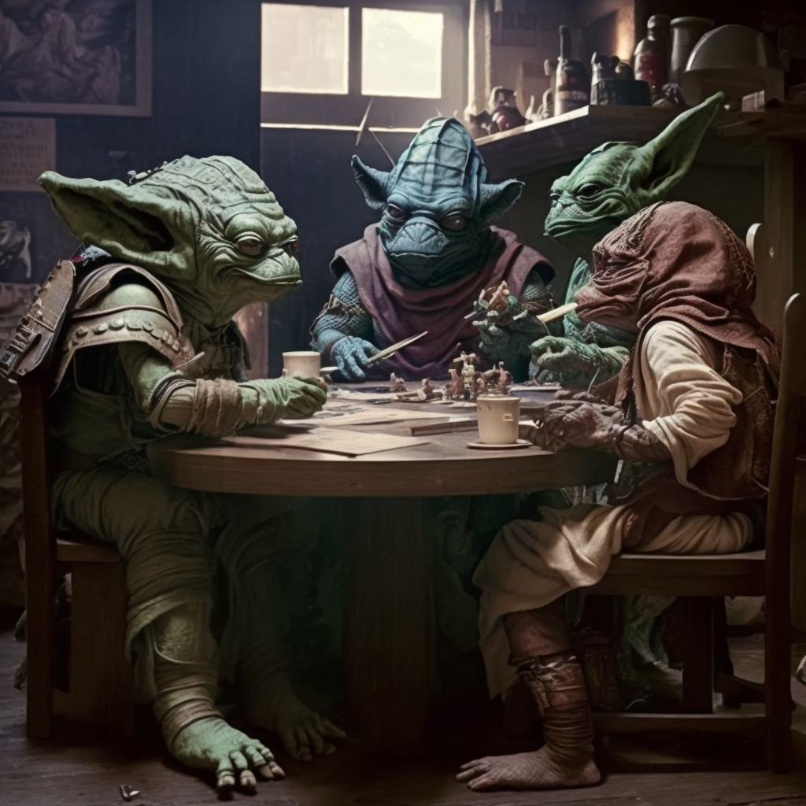

I've been really enjoying playing this game with my friends lately. It's a tabletop role-playing game where we get to pretend we're heroes from a primitive culture that has industrialized but hasn't yet achieved space flight. We spend hours exploring dungeons, fighting monsters, and strategizing about how to protect our tribe and grow our influence.
Our gaming group is called "The Fellowship of the Spreadsheets," and we've been meeting every week for the past six months. It's been a great way for us to bond and unwind after a long day at work.
If you're interested in learning more about the game, you can check out the official website here.
Here's a picture of our gaming group:
My character is Galfrid the Accountant. As an accountant, Galfrid is obsessed with numbers and meticulous record-keeping. His comrades have learned to appreciate his talents, as Galfrid has saved their hides on more than one occasion with his knowledge of logistics and economics. Galfrid's adventuring party consists of a barbarian named Krug, a ninja named Shinobi, and a truck driver named Big Rig. Krug is a hulking brute of a man, with rippling muscles and an unquenchable thirst for battle. Shinobi is a stealthy assassin, with a penchant for deception and sabotage. Big Rig is a burly fellow with a heart of gold, who drives the party's trusty battle-wagon through treacherous terrain and dangerous foes. Their last adventure took them to the heart of a mysterious jungle, where they were tasked with recovering a lost artifact known as the Orb of the Jungle God. Along the way, they encountered a tribe of cannibalistic savages, who had taken the Orb as a prize for themselves. Galfrid was able to negotiate a trade with the savages, exchanging a shipment of valuable spices for the Orb. As they made their way back to civilization, the party was ambushed by a rival group of adventurers, who had been hired to steal the Orb. A fierce battle ensued, with Krug and Shinobi fighting bravely on the front lines, Big Rig driving circles around the enemy, and Galfrid providing tactical support from the back lines. In the end, they emerged victorious, thanks to Galfrid's clever use of a smoke bomb and a well-placed spreadsheet analysis that revealed the enemy's weaknesses.